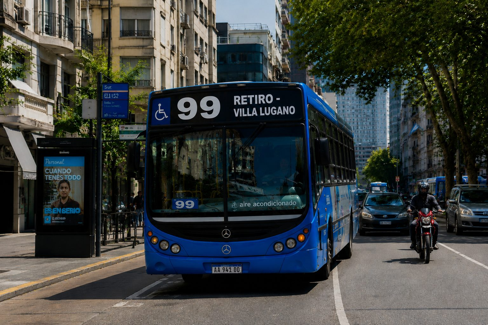
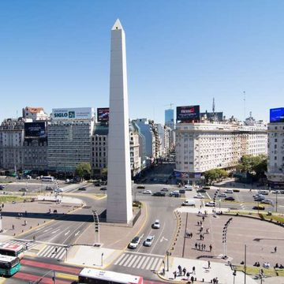
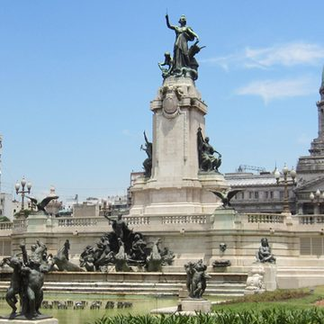
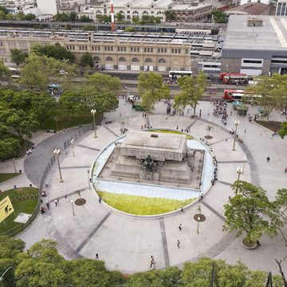
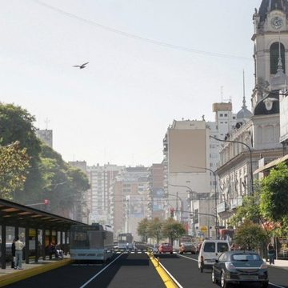
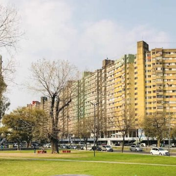
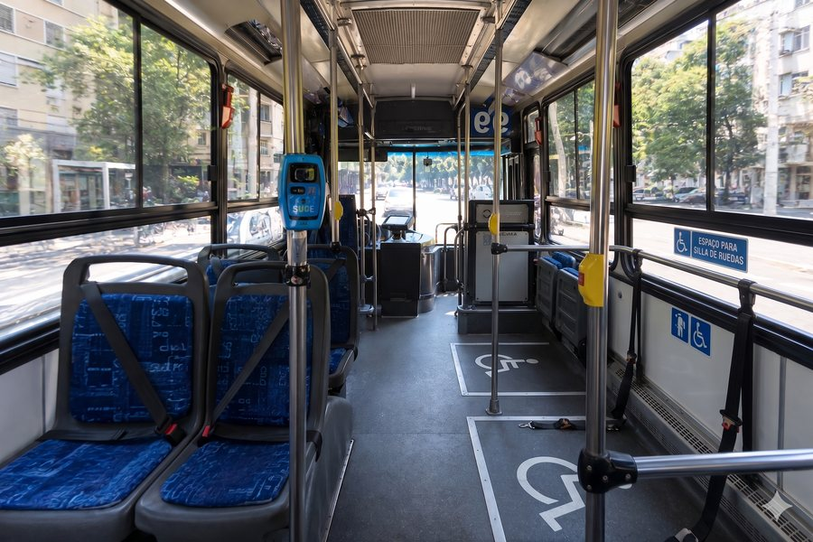

LÍNEA 99
Conexión estratégica este - oeste atravesando la Ciudad Autónoma de Buenos Aires. Uniendo los principales centros de trasbordo y polos universitarios con unidades de última generación.
Paradas Principales





Mapa y Ubicación
El recorrido atraviesa los lugares principales de Buenos Aires. Nuestras terminales de cabecera operan como centros de integración multimodal, conectando con las principales líneas de trenes y la red de subterráneos.
Terminal Retiro (Cabecera Este)
Av. Dr. José María Ramos Mejía 1300, Retiro. Conexión directa con FFCC Mitre, San Martín y Belgrano Norte. Acceso a Subte C y E.
Terminal Villa Lugano (Cabecera Oeste)
Av. Coronel Roca 5200, Villa Lugano. Centro de trasbordo con Premetro (Estación Centro Cívico) y acceso directo al Polo Educativo UBA Lugano.
Demanda y Horarios
| Turno | Retiro | Obelisco | Congreso | Once | Flores | Lugano |
|---|---|---|---|---|---|---|
| Mañana | 05:00 | 05:15 | 05:25 | 05:35 | 05:55 | 06:20 |
| Mañana | 09:30 | 09:45 | 09:55 | 10:05 | 10:25 | 10:50 |
| Tarde | 14:00 | 14:15 | 14:25 | 14:35 | 14:55 | 15:20 |
| Tarde | 17:30 | 17:45 | 17:55 | 18:05 | 18:25 | 18:50 |
| Noche | 20:15 | 20:30 | 20:40 | 20:50 | 21:10 | 21:35 |
| Noche | 22:30 | 22:45 | 22:55 | 23:05 | 23:25 | 23:50 |
| Madrugada | 02:00 | 02:15 | 02:25 | 02:35 | 02:55 | 03:20 |
Tarifas y Medios
Nuestra flota opera exclusivamente bajo el Sistema Único de Boleto Electrónico, garantizando agilidad y transparencia. Las tarifas se encuentran actualizadas al cuadro tarifario vigente en CABA.
Boleto Mínimo
Segunda Sección
Estudiantil
Características de Accesibilidad
Un servicio pensado para todos. Nuestra flota e interfaz digital cumplen con los más altos estándares de accesibilidad e inclusión.
Movilidad Física
Rampas automatizadas de piso bajo en el 100% de la flota. Zonas exclusivas con espacios para silla de ruedas y cinturones de seguridad adaptados.
Estímulos Sensoriales
Sistema de información visual y sonora anunciando paradas. Señalización clara mediante pantallas LED de alto brillo tanto dentro como fuera de la unidad.
Accesibilidad Digital
Nuestra web y App garantizan contraste adecuado de colores y una tipografía legible geométrica. Interfaz con navegación clara y lógica estructural.
Así es por dentro la flota de la Línea 99
